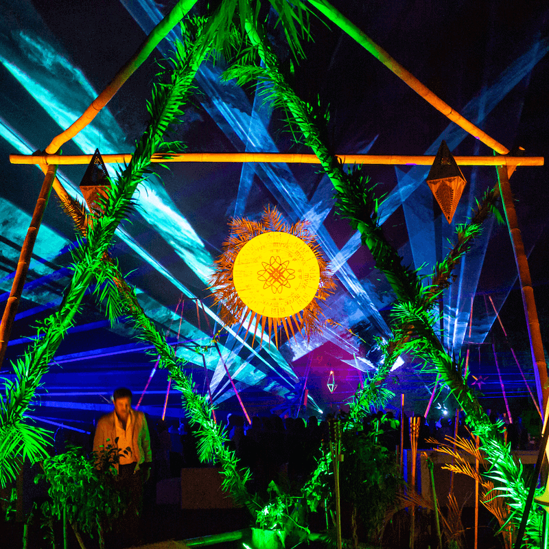

Da click aquí para contactarme

Da click aquí para contactarme
Novek group proporciona logística y herramientas tecnológicas para eventos masivos (sociales y deportivos) a nivel nacional. Sus soluciones abarcan un amplio espectro de necesidades como manejo de logística, boletaje y sistemas de cobro cashless.
El naming fue propuesto por parte del equipo de diseño como una asociación de palabras entre “novedoso” “nuevo” o “new” y “tech”.
Mientras tanto, el isologo busca reflejar seriedad, confianza y dinamismo a través del uso de una tipografía slab. Por otra parte, el color elegido es resultado de un estudio de color entre el gris – que aporta seriedad– y el azúl, que se asocia con la tecnología.
El primer evento de Novek group fue MUUK, el cual fué el evento de clausura del abierto de Polo del Caribe Mexicano 2020, contando con una grán cantidad de asistentes. Este evento requirió del desarrollo de una identidad propia, la cual puede ser observada en su propio apartado.
Propuesto para noviembre de 2020 sería una experiencia única de música, luces y ambiente. Donde cada invitado será por una noche un emperador maya.
Emperors night fue propuesto como parte del Art With Me en Tulum durante 2020, sin embargo fue cancelado debido a la pandemia de COVID 19
Kitam Ki Sounds, sería un amplio abanico de sensaciones y emociones para el sibarita moderno, ya que permitirá al invitado vivir una experiencia donde podrá ser parte de una festividad que girará en torno a la abundancia. Habrá una zona de comida gourmet para inundar el paladar de sabores únicos, una degustación de tequilas de diversos productores a nivel nacional, exposición de arte contemporáneo, un performance único y la mejor de las atmósferas. Festival musical propuesto para mayo de 2020, en El Rey, Polo Club; cancelado debido a la pandemia de COVID 19.
NOVI es un perro labrador entusiasta, intelectual, carismático y jovial. Su actitud es dinámica, fiel y confiable. Siempre propone nuevas ideas tecnológicas.